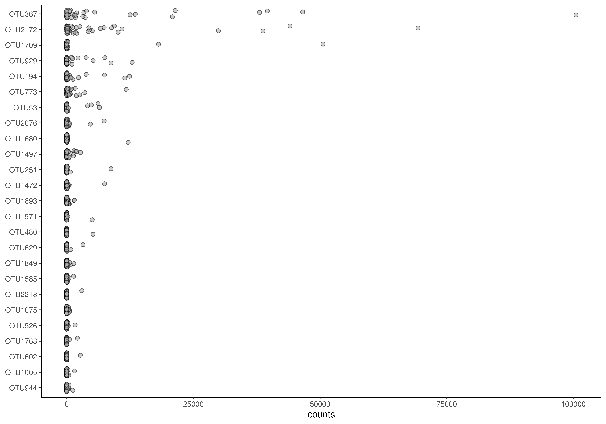
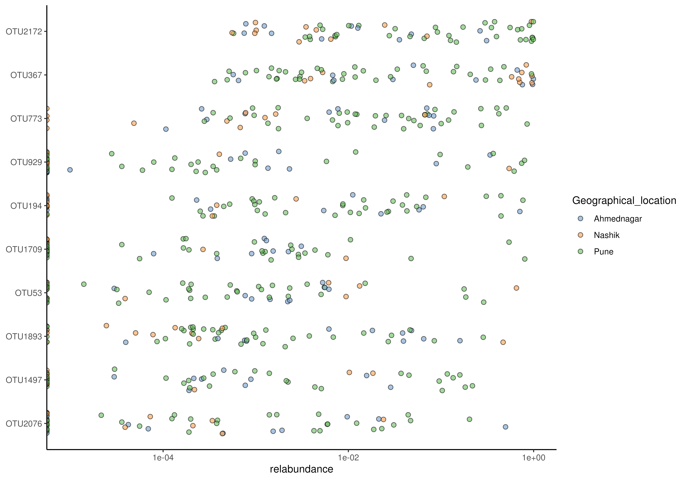
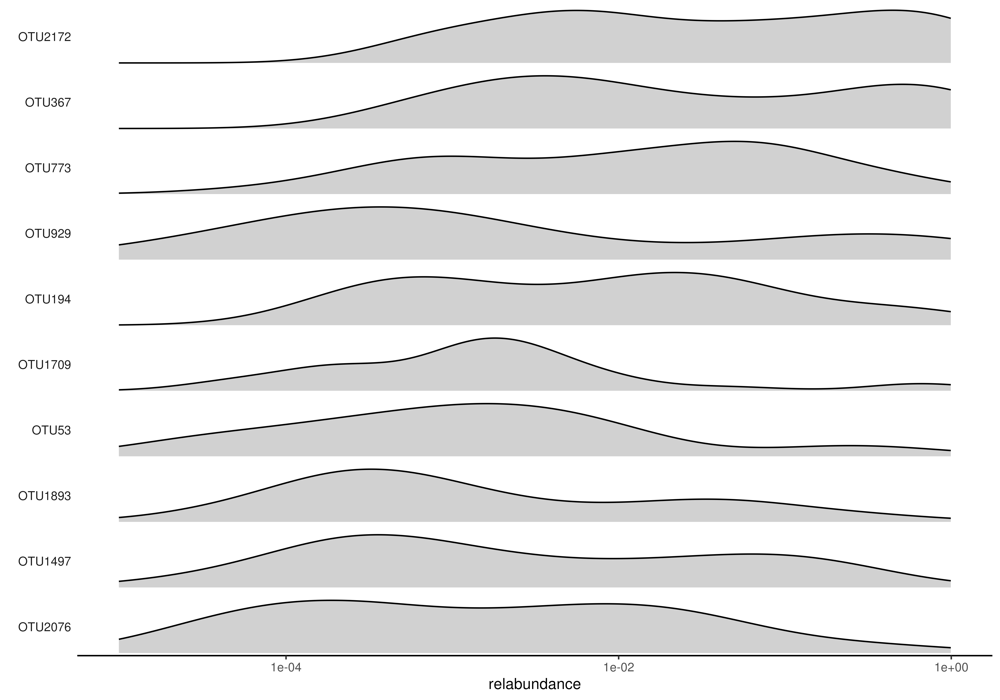
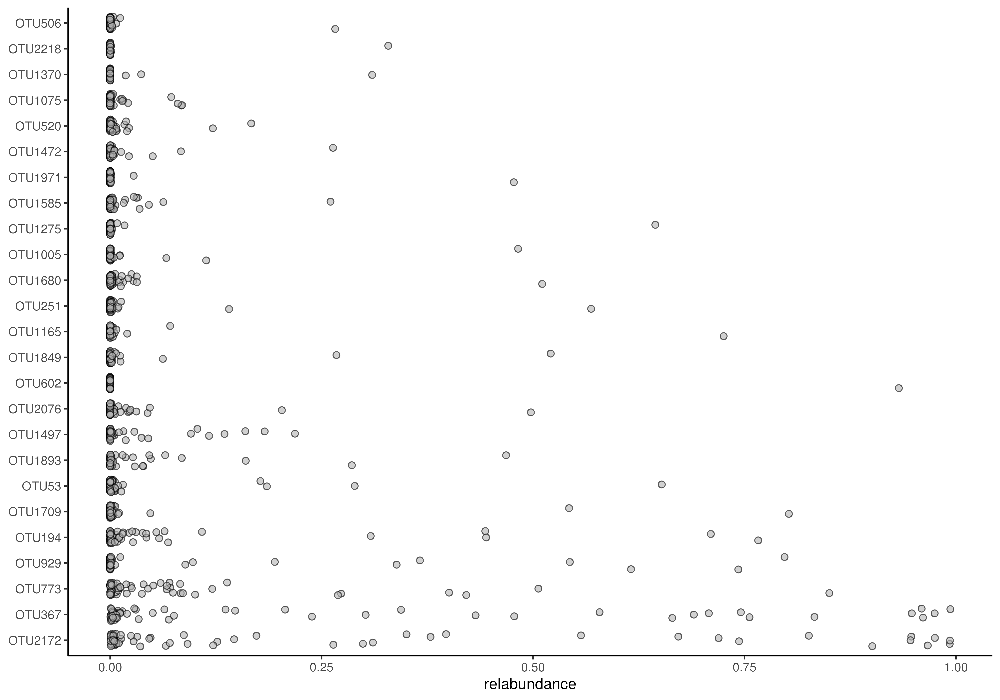
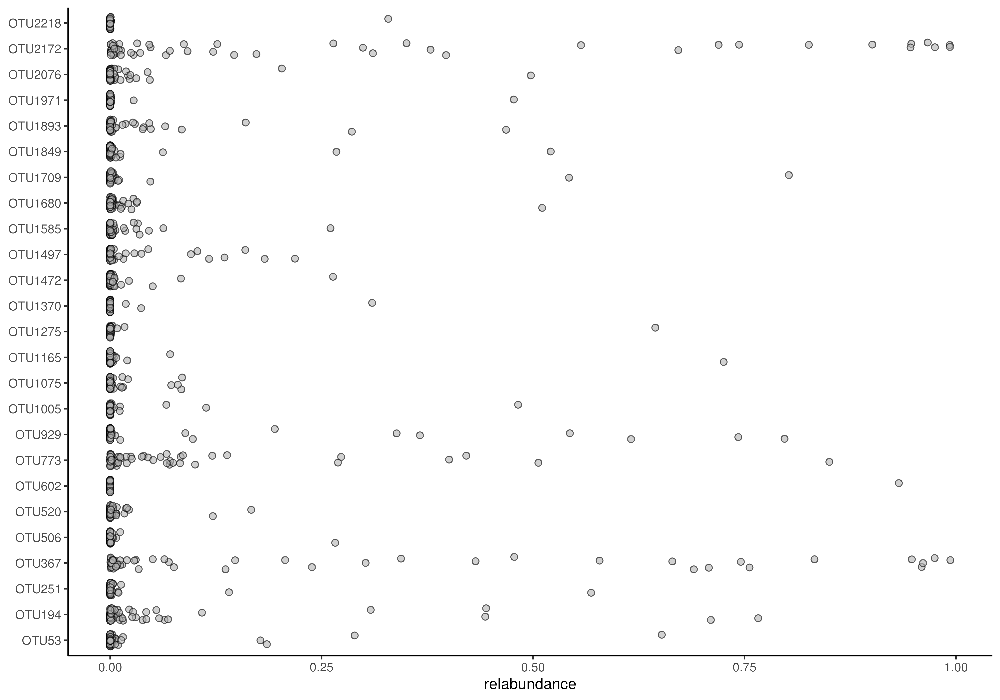
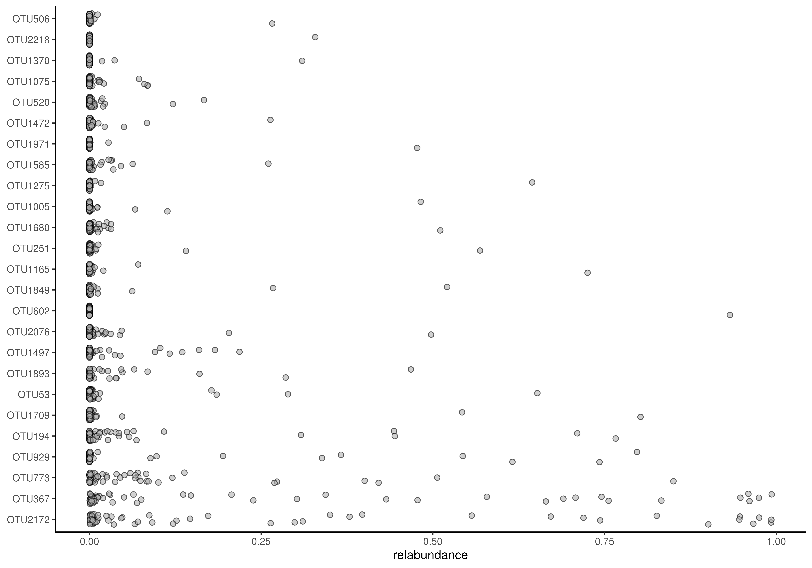
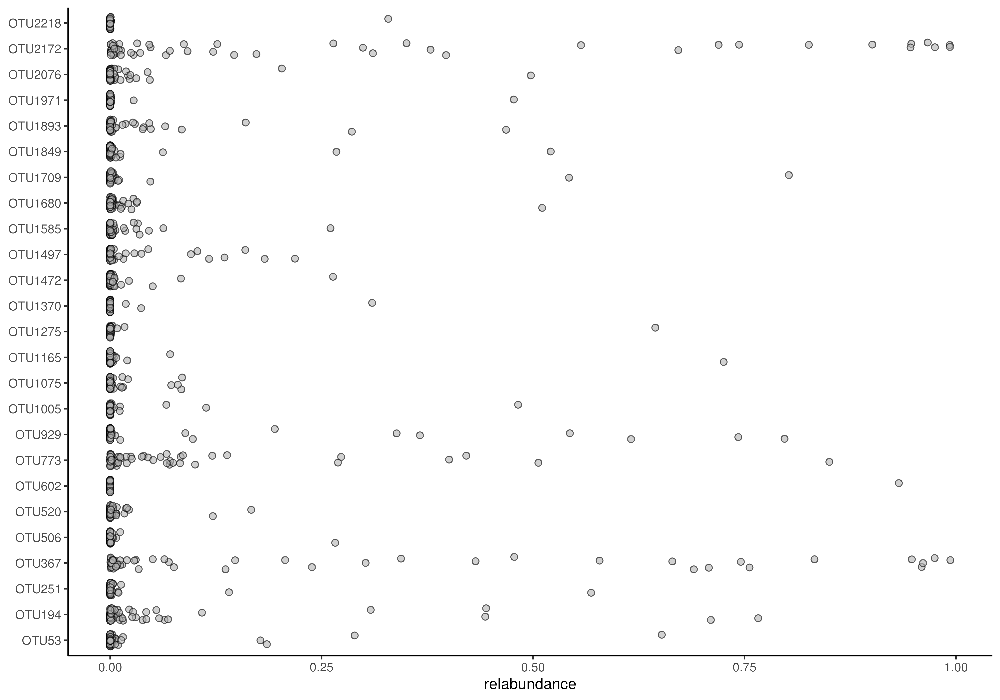

Plot abundance density
plotAbundanceDensity.RdThis function plots abundance of the most abundant taxa.
plotAbundanceDensity(x, ...)
# S4 method for class 'SummarizedExperiment'
plotAbundanceDensity(
x,
layout = c("jitter", "density", "point"),
assay.type = assay_name,
assay_name = "counts",
n = min(nrow(x), 25L),
colour.by = colour_by,
colour_by = NULL,
shape.by = shape_by,
shape_by = NULL,
size.by = size_by,
size_by = NULL,
decreasing = order_descending,
order_descending = TRUE,
...
)Arguments
- x
a
SummarizedExperimentobject.- ...
additional parameters for plotting.
xlabCharacter scalar. Selects the x-axis label. (Default:assay.type)ylabCharacter scalar. Selects the y-axis label.ylabis disabled whenlayout = "density". (Default:"Taxa")point.alphaNumeric scalar. From range 0 to 1. Selects the transparency of colour injitterandpointplot. (Default:0.6)point.shapePositive integer scalar. Value selecting the shape of point injitterandpointplot. (Default:21)point.sizePositive integer scalar. Selects the size of point injitterandpointplot. (Default:2)add_legendLogical scalar. Determines if legend is added. (Default:TRUE)flipped:Logical scalar. Determines if the orientation of plot is changed so that x-axis and y-axis are swapped. (Default:FALSE)add_x_textLogical scalar. Determines if text that represents values is included in x-axis. (Default:TRUE)
See
mia-plot-argsfor more details i.e. callhelp("mia-plot-args")- layout
Character scalar. Selects the layout of the plot. There are three different options:jitter,density, andpointplot. (default:layout = "jitter")- assay.type
Character scalarvalue defining which assay data to use. (Default:"relabundance")- assay_name
Deprecate. Use
assay.typeinstead.- n
Integer scalar. Specifies the number of the most abundant taxa to show. (Default:min(nrow(x), 25L))- colour.by
Character scalar. Defines a column fromcolData, that is used to color plot. Must be a value ofcolData()function. (Default:NULL)- colour_by
Deprecated. Use
colour.byinstead.- shape.by
Character scalar. Defines a column fromcolData, that is used to group observations to different point shape groups. Must be a value ofcolData()function.shape.byis disabled whenlayout = "density". (Default:NULL)- shape_by
Deprecated. Use
shape.byinstead.- size.by
Character scalar. Defines a column fromcolData, that is used to group observations to different point size groups. Must be a value ofcolData()function.size.byis disabled whenlayout = "density". (Default:NULL)- size_by
Deprecated. Use
size.byinstead.- decreasing
Logical scalar. Indicates whether the results should be ordered in a descending order or not. IfNAis given the order as found inxfor thenmost abundant taxa is used. (Default:TRUE)- order_descending
Deprecated. Use
order.descendinginstead.
Value
A ggplot2 object
Details
This function plots abundance of the most abundant taxa. Abundance can be plotted as a jitter plot, a density plot, or a point plot. By default, x-axis represents abundance and y-axis taxa. In a jitter and point plot, each point represents abundance of individual taxa in individual sample. Most common abundances are shown as a higher density.
A density plot can be seen as a smoothened bar plot. It visualized distribution of abundances where peaks represent most common abundances.
Examples
data("peerj13075", package = "mia")
tse <- peerj13075
# Plots the abundances of 25 most abundant taxa. Jitter plot is the default option.
plotAbundanceDensity(tse, assay.type = "counts")

# Counts relative abundances
tse <- transformAssay(tse, method = "relabundance")
# Plots the relative abundance of 10 most abundant taxa.
# "nationality" information is used to color the points. X-axis is log-scaled.
plotAbundanceDensity(
tse, layout = "jitter", assay.type = "relabundance", n = 10,
colour.by = "Geographical_location") +
scale_x_log10()
#> Warning: log-10 transformation introduced infinite values.

# Plots the relative abundance of 10 most abundant taxa as a density plot.
# X-axis is log-scaled
plotAbundanceDensity(
tse, layout = "density", assay.type = "relabundance", n = 10 ) +
scale_x_log10()
#> Warning: log-10 transformation introduced infinite values.
#> Warning: Removed 134 rows containing non-finite outside the scale range
#> (`stat_density()`).

# Plots the relative abundance of 10 most abundant taxa as a point plot.
# Point shape is changed from default (21) to 41.
plotAbundanceDensity(
tse, layout = "point", assay.type = "relabundance", n = 10,
point.shape = 41)
 # Plots the relative abundance of 10 most abundant taxa as a point plot.
# In addition to colour, groups can be visualized by size and shape in point plots,
# and adjusted for point size
plotAbundanceDensity(
tse, layout = "point", assay.type = "relabundance", n = 10,
shape.by = "Geographical_location", size.by = "Age", point.size=1)
#> Warning: Using size for a discrete variable is not advised.
# Plots the relative abundance of 10 most abundant taxa as a point plot.
# In addition to colour, groups can be visualized by size and shape in point plots,
# and adjusted for point size
plotAbundanceDensity(
tse, layout = "point", assay.type = "relabundance", n = 10,
shape.by = "Geographical_location", size.by = "Age", point.size=1)
#> Warning: Using size for a discrete variable is not advised.
 # Ordering via decreasing
plotAbundanceDensity(
tse, assay.type = "relabundance", decreasing = FALSE)

# for custom ordering set decreasing = NA and order the input object
# to your wishes
plotAbundanceDensity(
tse, assay.type = "relabundance", decreasing = NA)

# Ordering via decreasing
plotAbundanceDensity(
tse, assay.type = "relabundance", decreasing = FALSE)

# for custom ordering set decreasing = NA and order the input object
# to your wishes
plotAbundanceDensity(
tse, assay.type = "relabundance", decreasing = NA)
